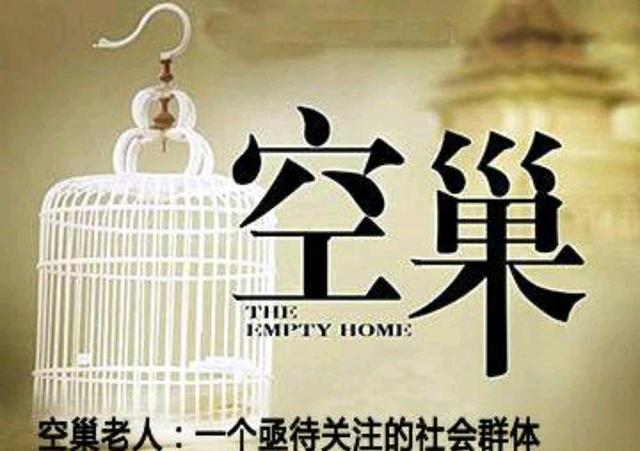
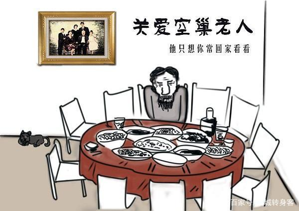
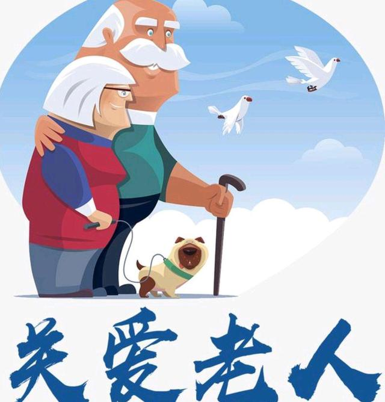
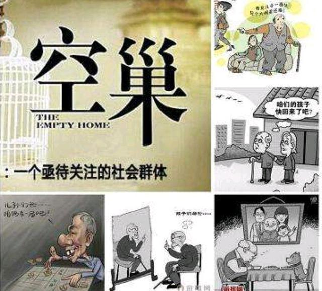

关爱空巢老人，莫让孤独终老！
【来源】：互联网
空巢老人，一般是指子女离家后的中老年人。随着社会老龄化程度的加深，空巢老人越来越多，已经成为一个不容忽视的社会问题。

随着我国经济的发展，老龄化问题日益突出，其中“空巢老人”现象尤其引人关注。2012年10月29日，首届全国智能化养老战略研讨会介绍，空巢老人比例很大，到2050年，我国临终无子女的老年人将达到7900万左右，独居和空巢老年人将占54%以上，空巢老人的养老问题，也再次引发关注。 小编今天要讲的就是，我们全社会要共同关爱空巢老人，莫让他们孤独终老！
子女要切实关心关爱父母
我们在外面工作的孩子要经常给家里打电话，要关心自己的父母，有条件的话还可以给父母寄东西，让父母知道虽然你不在身边，但是你一直挂念着他们。 如果不再老人身边，手机或许是最适用的工具了。都说，如今科技发达，都说手机既拉近了人与人之间的距离，也增加了心距。其实对于手机就看大家怎么用，怎么选。少刷一会儿微博，多跟老人开个视频。少关注那些不着边的新闻花边，多关注一下老人的身体。好尔美智能手机，为中老年人量身打造，老人生病不舒服，还能自主语音唤醒问诊功能，方便贴心。作为礼物送给老人再好不过。

养老制度要逐渐完善
要坚持对人民负责原则，为人民服务的宗旨，切实履行提供社会公共服务职能，完善社会保障制度和社会保障体系，提供养老服务。 国家要加快构建现代化养老服务体系，解决老年人的后顾之忧。以居家养老为基础、社区服务为依托，机构养老为补充，社工服务为载体，城乡一体化、投资多元化、管理规范化、队伍专业化的养老服务体系。加大政府财政投入，完善公共基础设施，为空巢老人提供生活照料、心理抚慰、应急救助、健康保健、法律援助等基础服务；积极支持社会力量兴办养老院，政府提供财政支持，使得空巢老人老有所居；通过社区的服务、社工的悉心照料，志愿者的关爱行动，保障老年人的晚年生活。
要培养老人“积极养老”观念
老人有一个“再社会化”的过程，“社会化”这个词原来主要针对青少年，青少年如何适应社会，了解社会，与社会如何和睦相处。老人同样需要一个这样的过程，因为他原来是社会的中坚力量，到最后逐渐回归家庭，在这个过程中，他怎么认知自己，定位自己和其他人、和社会、子女的各种关系。通过这种方式，把这种关系处理好。有很多研究表明，“再社会化”比较好的人，往往他的幸福感比较强。 要改变空巢老人这种现实状况需要时间，但是老人们可以主动改变自己的观念，把生活丰富起来，学学自己以前想学没有学成的东西，做做手工、画个画，或者趁着腿脚还利索，去自己想去的地方看看。不要把全部希望动力都寄托在子女身上，生活在自己手上，怎么快乐过自己说了算。

要动员全社会力量，志愿服务老人
要从文化的角度努力，必须要把传统文化的美德和精华继承下来。凝聚着中华民族核心的东西就是文化，就是我们的传统美德。如果在文化上不遵从，还怎么发扬光大？我们谈中华文化不要泛泛而谈，应该具体到细则和每一点。只有在物质层面、文化层面和社会层面得到保障，才能把空巢老人的问题解决好。 要组织志愿者定期或不定期为精神寂寞、特别是有心理疾患的空巢、孤寡老人提供心理抚慰志愿服务。要组织和动员企业家和先富起来的人士慷慨解囊自发爱心，在中华民族传统节日如春节、元宵、端午、中秋、重阳，看望慰问老人，体现在特殊的节日特殊情怀，各级要对空巢、孤寡老人情况记录存档，在他们生日之际，赠送贺卡或小礼物，给他们一份不一样的感动。要经常以电话问候、上门慰问、为老人读报、陪老人聊天等方式，进行心理咨询和心理疏导。要组织人员帮助这些老人买菜、送药给予他们解决日常生活的困难，要定期为这些老人每年进行健康体检，确保这些老人的身心健康。

客观来看，面对空巢老人，只有政府“尽责”、社区“尽情”、子女“尽孝”，构建起机构养老、社区养老、居家养老三位一体的养老模式，才能从根本上缓解空巢之痛、减少“空巢悲剧”。
浏览量：33

- 联系
我们

工作日：
早9:00-晚18:00
杨老师：
400-888-8888